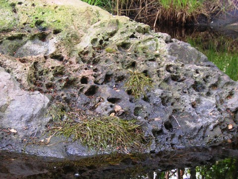

Gammelån - Den gamla ån
Den sägenomspunna Gammelån i Florarna rinner om du tar en titt på topografiska kartan från Agnsjöarna i söder till Vikasjön.
Det är en sanning med modifikation.
Gammelån har inte alltid haft den sträckningen, jo, den nedre delen av ån mot Vikasjön är densamma som den alltid varit. Men Agnsjöarna avvattnades ursprungligen över myrarna söderut. Om du tittar på kartan så ser du att sträckningen av Gammelån från Stora Agnsjön fram till Påls udde (även kallad Gammelåkröken) är rak som ett streck långa partier. Förklaringen är att denna del av ån grävdes och egentligen heter denna del på äldre kartor för Nyån eller Nydiket.
Den ursprungliga källan till Gammelån går att finna vid sjön Fälaren med omgivande myrmarker. Fälaren avvattnades ursprungligen över Florarna. Hillebolamossen och därefter myrhalsarna mellan Brändön och Östermarken och ner över Storfloran. Men även från Fälaren grävdes ett nytt dike, den så kallade Fälarån, som rinner ut i Långån strax uppströms Finnsjön.
I södra delen av Hillebolamossen där den kläms ihop mellan Östermarken och Brändön kan man ännu skönja resterna av den gamla åfåran i myren. Likadant kan du vår och höst se antydningar av den gamla ringlande åfåran om du står på spången mellan Påls udde och Karbotten (Grillholmen).
Får många år sedan när jag vandrade med min mormor, Vera Hagel, på Flororna så gick hon ner vid Gammelåns kant och ställde sig och började titta under stenar på bottnen. Hon berättade att det i äldre tider funnits kräftor i delar av ån. Hon såg inga denna gång.
En roddtur upp i Gammelån från Vikasjön. Foto: Ronny Fredriksson
Jag kom fram till Upplandsledens östra bro. Rodde under den och vände sedan tillbaks mot Vikasjön. Foto: Ronny Fredriksson
”Näckastenen”
I Gammelån finns en sägenomsusad sten, eller snarare kanske ett klippblock. Blocket kallas ”Näckastenen” och påstås leva, lyssna och kunna förflytta sig. Men den förflyttar sig enbart i Gammelåns sträckning.
Ibland har Näckastenen varit halvvägs upp mot Påls udde och ibland nästan vid Gammelåns utlopp i Vikasjön.
Det påstås att stenen har starka band till vattnets väsen näcken, det sägs att näcken ofta väljer just ”Näckastenen” som en god plats i Gammelån. Folk har undvikit ”Näckastenen” framförallt när det mörknar i Florarna.
Anledningen till dessa sägner om ”Näckastenen” är sannolikt att den ser annorlunda ut. Jag skulle själv vilja säga att den ser ut som något som ramlat ner från rymden. Man kan se massor med håligheter i den....ungefär som det vari bubblor i stenen. På en annan sida ser man linjer...nästan rutor i stenen. Se de bilder jag lagt upp nedan.
Här passeras ”Näckastenen”. Foto: Ronny Fredriksson

Håligheter / bubblor i Näckastenen. Foto: Ronny Fredriksson
Streck och rutor på Näckastenen. Foto: Ronny Fredriksson
Nog ser den underlig ut ? Foto: Ronny Fredriksson